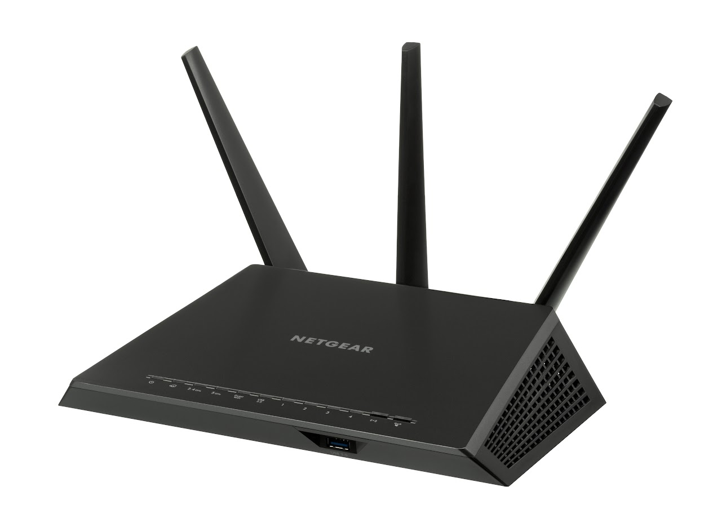

Every machine on the Internet has a unique identifying number, called an IP Address. The IP stands for Internet Protocol, which is the language that computers use to communicate over the Internet. A protocol is the pre- defined way that someone who wants to use a service talks with that service. The "someone" could be a person, but more often it is a computer program like a Web browser. A typical IP address looks like this: 200.5.166.104 To make it easier for us humans to remember, IP addresses are normally expressed in decimal format as a dotted decimal number like the one above. But computers communicate in binary form. Look at the same IP address in binary: The four numbers in an IP address are called octets, because they each have eight positions when viewed in binary form. If you add all the positions together, you get 32, which is why IP addresses are considered 32-bit numbers. Since each of the eight positions can have two different states (1 or zero), the total number of possible combinations per octet is 28 or 256. So each octet can contain any value between zero and 255. Combine the four octets and you get 232 or a possible 4,294,967,296 unique values! Out of the almost 4.3 billion possible combinations, certain values are restricted from use as typical IP addresses. For example, the IP address 0.0.0.0 is reserved for the default network and the address 255.255.255.255 is used for broadcasts. The octets serve a purpose other than simply separating the numbers. They are used to create classes of IP addresses that can be assigned to a particular business, government or other entity based on size and need. The octets are split into two sections: Net and Host. The Net section always contains the first octet. It is used to identify the network that a computer belongs to. Host (sometimes referred to as Node) identifies the actual computer on the network. The Host section always contains the last octet. There are five IP classes plus certain special addresses. You can learn more about IP classes at What is an IP address?.
When the Internet was in its infancy, it consisted of a small number of computers hooked together with modems and telephone lines. You could only make connections by providing the IP address of the computer you wanted to establish a link with. For example, a typical IP address might be 216.27.22.162. This was fine when there were only a few hosts out there, but it became unwieldy as more and more systems came online. The first solution to the problem was a simple text file maintained by the Network Information Center that mapped names to IP addresses. Soon this text file became so large it was too cumbersome to manage. In 1983, the University of Wisconsin created the Domain Name System (DNS), which maps text names to IP addresses automatically. This way you only need to remember www.howstuffworks.com, for example, instead of HowStuffWorks.com's IP address. When you use the Web or send an e-mail message, you use a domain name to do it. For example, the Uniform Resource Locator (URL) "http://www.howstuffworks.com" contains the domain name howstuffworks.com. So does this e-mail address: example@howstuffworks.com. Every time you use a domain name, you use the Internet's DNS servers to translate the human-readable domain name into the machine-readable IP address.
All of these networks rely on NAPs, backbones and routers to talk to each other. What is incredible about this process is that a message can leave one computer and travel halfway across the world through several different networks and arrive at another computer in a fraction of a second! The routers determine where to send information from one computer to another. Routers are specialized computers that send your messages and those of every other Internet user speeding to their destinations along thousands of pathways.
